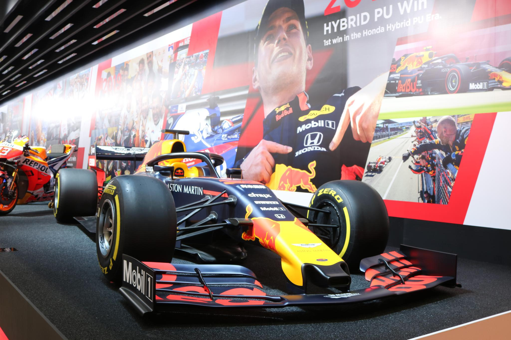
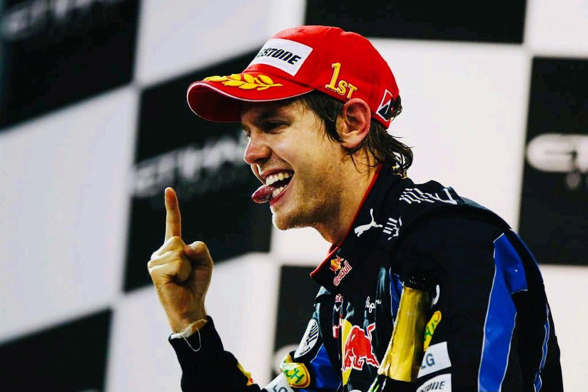
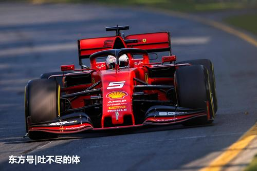
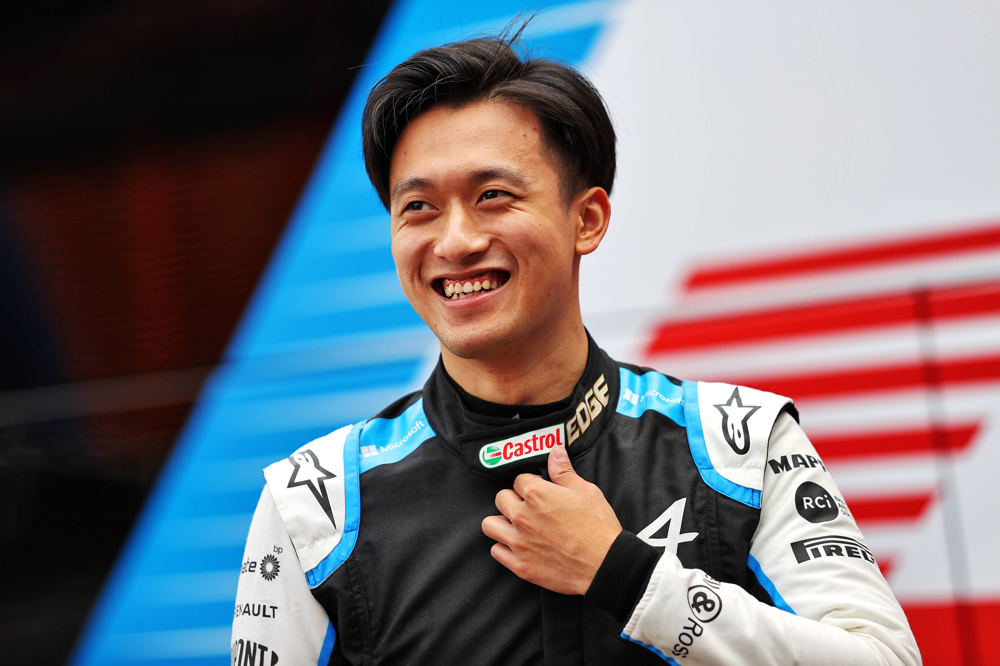
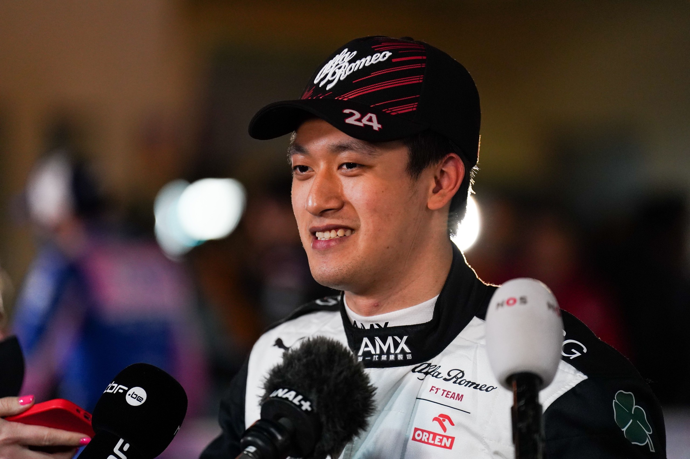

世界一级方程式锦标赛
F1介绍
世界一级方程式锦标赛（FIA Formula 1 World Championship，简称F1），是国际汽车运动联合会（FIA）举办的最高等级的年度系列场地赛车比赛，是当今世界最高水平的赛车比赛，与奥运会、世界杯足球赛并称为“世界三大体育盛事”。
首次比赛于1950年英国银石赛道举行。
WDCF1车手世界冠军
四届WDC车手瓦特尔
 塞巴斯蒂安·维特尔（Sebastian Vettel），1987年7月3日出生于德国黑彭海姆，德国F1车手，2010年~2013年四届F1世界冠军。 2009年，维特尔首次驾驶红牛赛车出战就获得年度亚军。2010年，维特尔夺得车手年度总冠军，同时帮助红牛车队赢得了第一座车队冠军奖杯。2011年维特尔卫冕世界冠军。2012年维特尔三度获得世界冠军。2013年维特尔第四次获得F1世界冠军，并创造了单赛季9连胜的纪录。2015年，转投法拉利车队。2017年10月23日，2017赛季F1美国大奖赛中，获得第二名。2019福布斯100名人榜排名第86位。2020年9月，维特尔于2021赛季加盟阿斯顿·马丁车队。
中国F1车手
周冠宇介绍
 周冠宇（Zhou Guanyu），1999年5月30日出生于中国上海，中国一级方程式赛车运动员，效力于世界一级方程式锦标赛（F1）的阿尔法·罗密欧竞速车队。 2014年，周冠宇签约法拉利车手学院。一年后，周冠宇获得意大利F4锦标赛亚军。 2016年，周冠宇获得欧洲F3季军。 2018年，周冠宇获得欧洲F3冠军。2019年，周冠宇创下英国银石赛道F2最快纪录。 2020年8月1日，周冠宇在F2英国站首回合正赛中获得第2名，成为首位夺得F2亚军的中国车手；9月27日，2020赛季国际汽联F2锦标赛俄罗斯索契站第二回合比赛中，周冠宇获得个人F2生涯首冠，创造了中国赛车的历史。 2021年2月20日，周冠宇夺得2021赛季亚洲F3锦标赛车手总冠军；3月28日，在2021赛季国际汽联F2锦标赛巴林站比赛中，周冠宇夺得自己F2生涯首个正赛冠军，再次创造中国赛车的历史；11月16日，阿尔法·罗密欧竞速车队官宣周冠宇成为2022赛季为车队效力的正式车手，周冠宇成为中国历史首位一级方程式赛车正式车手。2022年11月，周冠宇获得F1年度第18名。